Type “/” for any block
On an empty line, “/” opens the block menu: a small drawing of each block, filtered as you type. Or click the “+” beside a line.
Writing with Markstage
64 features, all in the free self-hosted editor
Each feature below works today in the example blog that comes with the code, and links to the page of the docs that explains it. Planned work is on the roadmap, never here.
12 features
The block editor people already know from Notion, drawn on your real design instead of grey form fields.
On an empty line, “/” opens the block menu: a small drawing of each block, filtered as you type. Or click the “+” beside a line.
Writing with MarkstageEvery block has a grip. Drag it, or open its menu: move up, down, to the top, to the bottom or to a place you pick, duplicate or delete, with Undo.
Writing with Markstage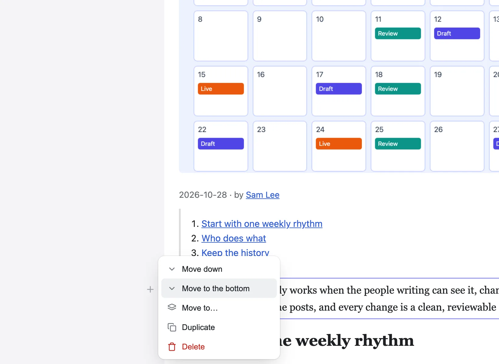
One search box for pages, posts, the editor’s screens and settings. The ones you opened last come first.
Writing with Markstage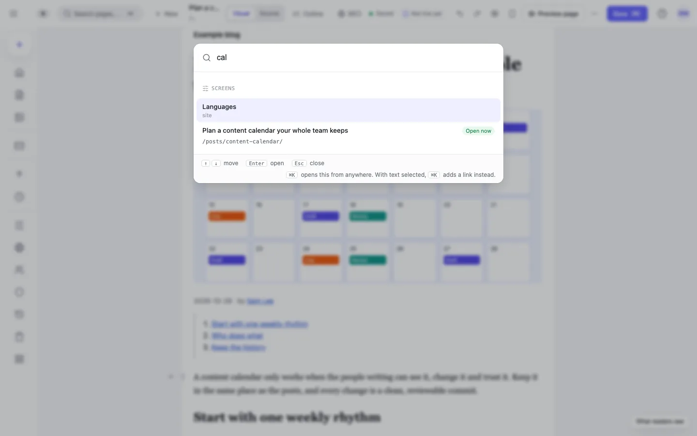
Every block in a list, each section under its heading: fold sections, show headings only, drag rows or move several at once.
Writing with Markstage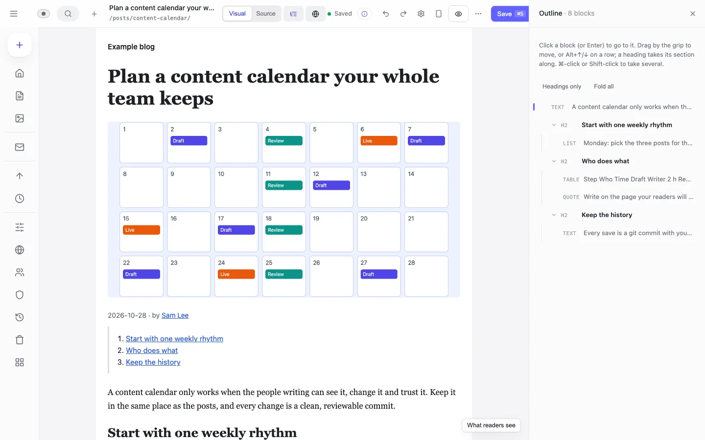
Bold, italic, a link, a heading, a list or code. A link searches the site’s own pages, with new tab, nofollow and sponsored beside it.
Writing with MarkstageStart a line with # for a heading, - for a list or > for a quote, and type --- for a divider.
Writing with MarkstageWord’s lists and headings arrive as real blocks, and its office markup is left behind.
Writing with MarkstageA Table menu adds, moves, sorts and deletes rows and columns; Alt and an arrow moves a row.
Writing with Markstage⌘F finds in the article, ⌥⌘F replaces as well, and one ⌘Z takes a Replace all back.
Writing with MarkstageType the words of an .mdx file on the page; components show as cards with simple settings in a side panel, and the code stays exactly as written.
Editing MDXSource shows the file as it is written; Visual brings the page back with your changes.
Writing with MarkstagePress ? for the keyboard shortcuts and “How do I…” topics, each able to point at the part of the screen it is about.
Writing with Markstage12 features
Pages, posts and pictures, edited where they appear, with parts to use again.
Each entry is drawn inside its real page, with the site’s components, CSS and column width. JSON pages too, with each section’s fields in a side panel.
Writing with Markstage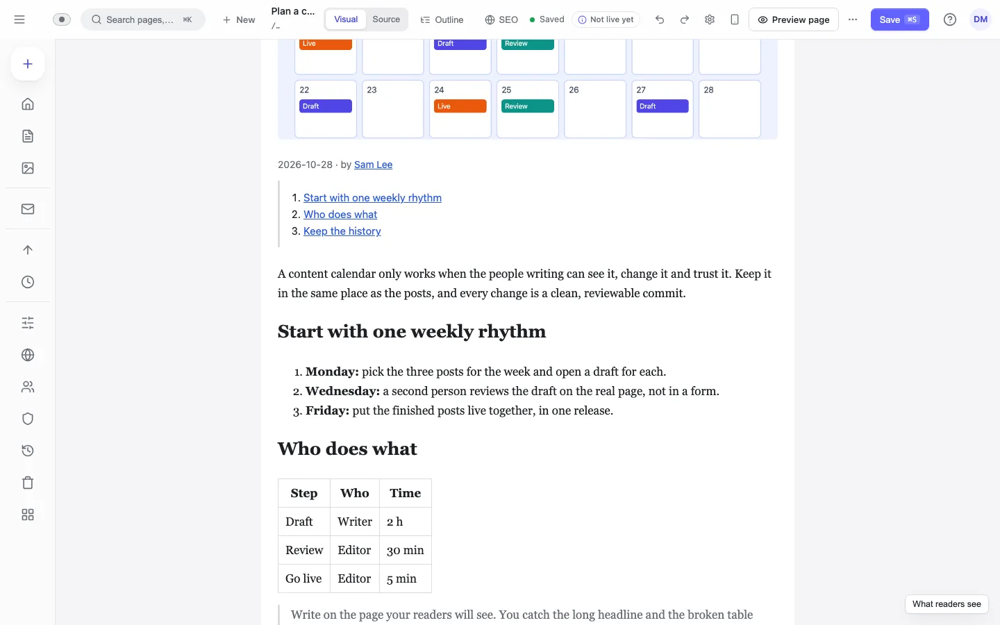
Page templates, sections and snippets in folders. A synced item is edited once and every page that uses it follows.
The Library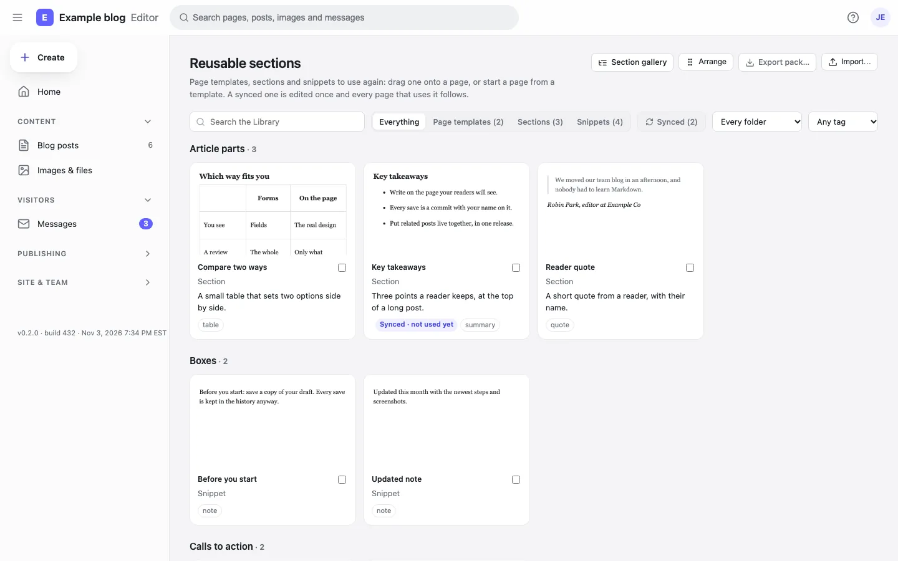
Upload, find and reuse; see which images have no alt text or are not used; replace one everywhere it appears.
Markstage API (contract)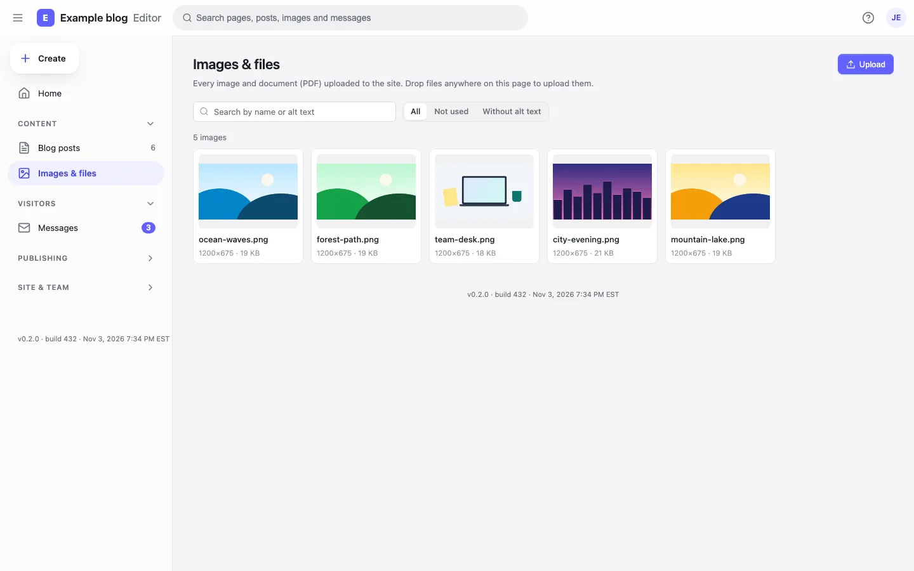
FAQ, tips, steps and the other boxes your site defines are drawn as the page shows them; you type straight into them.
Writing with MarkstageOn a page made of sections, drag one from the Library onto the page itself; a line says where it will land, and Undo takes it out again.
Writing with MarkstageEvery section type and variation your site has, drawn alone by your site at 1440 and 390 pixels wide, light or dark.
Section gallery and “Edit this page”Caption and alt text under the picture, a switch for decorative images, and widths, crop, rotate and replace in a bar over it.
Writing with MarkstageWith an Unsplash or Pexels key on the server, the media library searches free stock photos and keeps each photographer’s name with the photo.
Deploying MarkstageFull width, reading or plain, and a page type with the checks that kind of page needs.
Page frames and page typesA profile per person, kept as a JSON file, linked from posts, with an author page each.
AuthorsFor each region: which titles and descriptions are missing, outdated or done, newest change first.
Translation statusA setting whose options come from a product catalogue or a CRM, fetched from a JSON address on a schedule.
Integration fields13 features
Prismic-style releases, environments and roles, included and free to self-host.
What changes, the checks (the site’s rules, alt text, links, the page on a phone), then now or at a time. By default, a missing alt text or a broken link stops it.
Writing with Markstage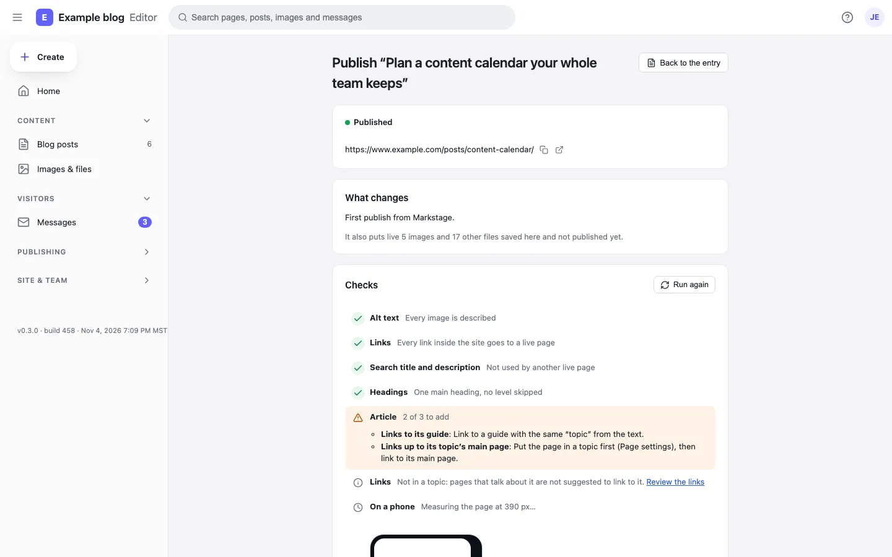
Put several changes into one release, preview the site as it will be, then publish now or at a time, in one commit. Roll it back if you need to.
Releases and share links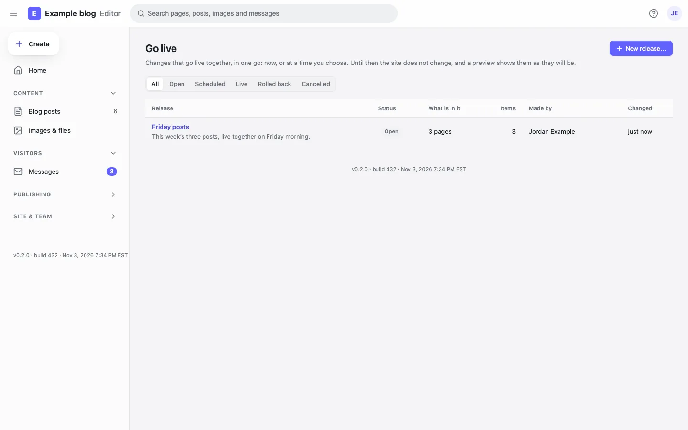
Each environment is a branch plus a server. Promote code and content together, with checks, screenshots and rules about who may do it.
Environments: local, staging, production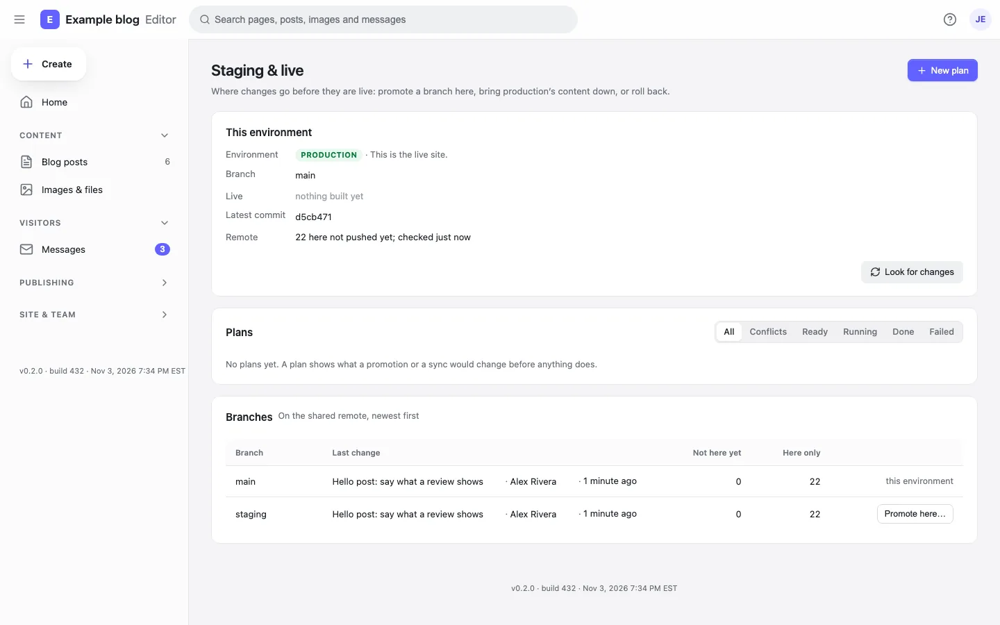
The site’s forms post to Markstage on your own host: spam checks, limits, team mail and a daily digest.
Forms, messages and alerts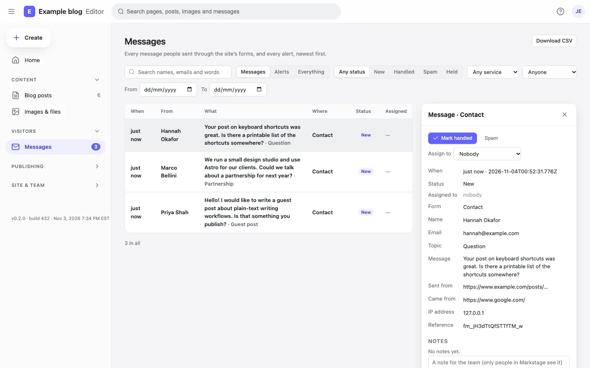
A preview of a release or a draft for people with no account. It expires, can be turned off, stays out of search engines, and counts its views.
Releases and share linksPeople signed in to Markstage get an edit link on the site’s own pages. Visitors see nothing of it.
Section gallery and “Edit this page”With the Markstage server, a save is a git commit by the person who saved.
Markstage API (contract)Owner, Administrator, Editor, Author and Contributor, decided in one place on the server.
PermissionsA translator, a reviewer or an editor who may not upload: limited to collections, locales and even single fields.
Custom rolesSign in with Google Workspace, Microsoft Entra ID, Okta or any OpenID Connect provider; two-factor codes with recovery codes.
Single sign-on (OpenID Connect)Lock a block or a section against moving, deleting or changing; the site can set locks on every page.
Writing with MarkstageA line under the header says when someone else has the page open, and saves still check the version.
Markstage API (contract)Signed webhooks for saves, publishes and new media; entries and media imported from JSON, with a dry run first.
Webhooks8 features
Search checks while you write, and links that keep old pages and new ones together.
The search result as Google shows it, measured in pixels; headings in order (a skipped level is flagged); weak links and images without alt text.
Writing with Markstage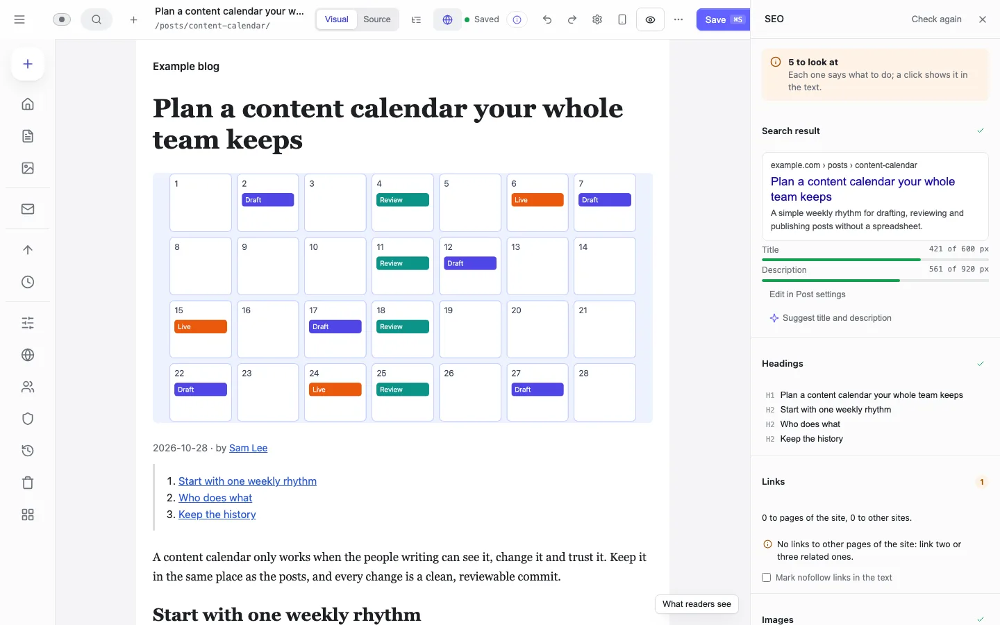
Post settings shows the search result and the social card as you type the title, description and cover.
Writing with MarkstagePick a screen, and a list says what does not fit: too wide, too small to tap, text too small.
Writing with MarkstageOld pages learn about a new one, and the new one gets the right older pages, each with the sentence to link in.
Topics and internal linksPages no page links to, vague link words, links to old addresses: worst first, each with a one-click fix.
Writing with MarkstagePut a page in a topic and its group, so pages in a topic list each other on the site.
Writing with MarkstageWhen an address changes, the old one goes on working; moved addresses are listed in one place.
Writing with MarkstageBroken links, redirect chains, missing alt text and what the host serves for every address, for the whole site.
Markstage API (contract)7 features
A save changes only what you changed, and nothing you typed is lost.
Compare any two saved versions side by side, and restore one block or the whole page.
Writing with Markstage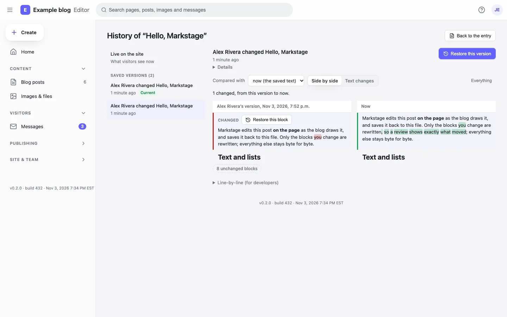
Only the changed blocks are rewritten. Open and save with no edit, or move a block and move it back, and the file is byte for byte the same.
Markstage API (contract)Your unsaved text is kept in this browser, so a closed tab or a crash loses nothing; the editor offers it again when you come back.
Writing with MarkstageWhen two people change one page, what only one side changed comes in by itself; where both changed a block, you pick yours, theirs or both.
Markstage API (contract)Deleted entries go to the trash first; the server keeps backups, and a release or a promotion can be rolled back.
Deploying MarkstageWho did what and when, for the owner and administrators.
Markstage server: securityA page with unsaved changes is drawn on an origin of its own, so the page’s code never runs with your session.
Preview render12 features
AI that drafts, people who publish. Bring your own key; nothing is saved until a person reads it.
Claude or any MCP client reads the site and drafts as the person whose token it holds, with the same roles, locks and checks. It never deletes or promotes, and publishes only if you allow it.
The MCP server: AI agents
For a local client that speaks MCP over stdin and stdout: one command keeps the token and passes each message on.
The MCP server: AI agentsAn owner or administrator may give an agent a publish token, with a plain warning. The site’s checks run first, then its publish rules and roles decide, as for you; each publish names the agent.
The MCP server: AI agentsSelect words, then Improve with AI: rewrite, shorten, fix the spelling or change the tone. The change shows beside the words; accept, edit or reject it.
AI suggestionsSuggest on an image’s Alt line writes a description for you to accept, change or dismiss.
AI suggestionsSuggest title and description in the SEO check, next to the result as Google shows it.
AI suggestionsSuggest links with AI in Post settings picks pages of your site and the words to link, each checked on the server: the page is there, not linked yet, and the words are in the text. Add link or dismiss each.
AI suggestionsSuggest a fix under a problem the SEO check found: a title or description too long or short, a heading out of order, “click here” link words, missing alt text. The fix shows as a diff to accept, edit or reject.
AI suggestionsDraft translation under a region in Post settings, for a person to read and save.
AI suggestionsOne run drafts every page’s title and description in a region, within your AI limits, after a dry run that says how many, how long and what is skipped. The drafts wait for a person to review; none is published.
Translation statusSummarize changes beside a promotion’s reason, in plain words, from what the plan changes.
AI suggestionsAnthropic, any OpenAI-compatible endpoint (OpenAI, Azure, OpenRouter, Together, LM Studio) or Ollama on your own machine with no key.
AI suggestionsClone the repository, install, and open the editor on the example blog: every feature above is there.